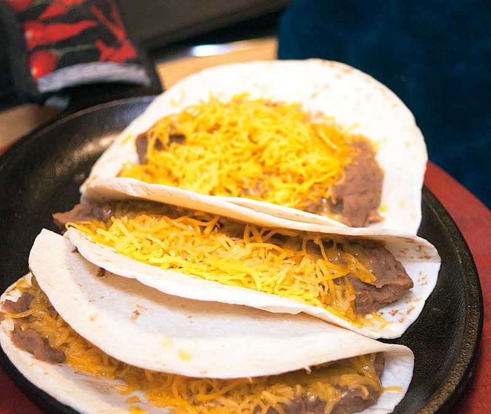

Chorizo and Refried Beans

A simple but delicious taco
This is another South Texas classic. This one may come back to bite you later, But I think its worth it.
The chorizo mixed in with the refried beans is one of the most satisfying and savory combinations on the planet.
Couple this with some shredded cheese and you got yourself a mouthful.
Ingredients:
- 1/2 to a full link of Chorizo (If unsure what type this is what I use.
- 1/2 to 1 full can of refried beans. (You can make them home made if preferred but that is beyond the scope of this website.)
- Flour or Corn tortillas
- (optional)Shredded Cheese
Cooking Instructions:
- Remove chorizo from the casing, crumble into a skillet and cook in its own juices over medium heat for approximately 8 minutes (Product to be cooked to an internal temperature of 160 degrees Fahrenheit).
- Once the Chorizo is cooked you can add the half or full can of refried beans. Stir at slightly lower heat so you do not evaporate all the juices. (Add butter if you think beans the beans are too dry.)
- Heat tortillas on a metal pan. If you want to heat them like my fellow Mexican Americans do at home, a Comal similar to this would be good.